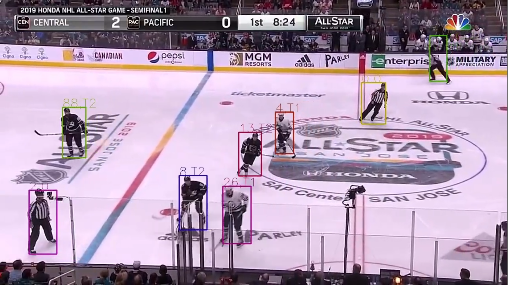
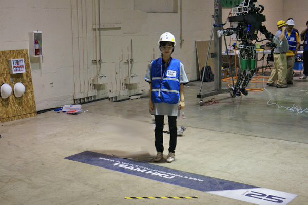

About me
I am postdoctoral fellow in Mérida Labs of University of British Columbia, I work on developing the digital twin of the UBC Smart Hydrogen Energy District (SHED) designed for smart and renewable energy technologies. I obtained my Ph.D. in computer science from the Immersive and Creative Technologies (ICT) lab at Concordia University, where I was advised by Dr. Charalambos Poullis on the project of DAEDALUS: Massive-scale Urban Reconstruction, Classification, and Rendering from Remote Sensor Imagery. Before, I received my M.Sc. in computer science from the University of Hong Kong under the supervision of Dr. Dirk Schnieders on the project of mobile augmented reality, and worked at HKU Advanced Robotics Initiative(My homepage) as research assistant. I had one year experience of full-time research associate in robot picking challenge at the HKU Mechanical Robotics lab with my supervisor Dr. James Lam. Now I am a computer vision researcher in sports streaming at Livebarn Inc. My current job is applied research on computer vision tasks in sports videos, e.g. player recognition, identification and tracking, player analysis, scoreboard recognition, lane and speed detection, and sports field detection, etc.
My main research interests lie in fundamental topics of image-based 3D reconstruction of large-scale urban areas. More broadly, I am interested in computer vision, computer graphics, structure-from-motion, (multi-view) stereo, localization, optimization, machine learning/deep learning, virtual/augmented reality and artificial intelligence. You can find my publications on Google Scholar.
Highlights
-

3D Reconstruction

Motion Estimation for Large Displacements and Deformations, Nature Scientific Reports 2022.
-

Player Analysis
Ice hockey player tracking and identification.
(Livebarn Inc.) -

Local News
Part of a long-term vision of automating the creation of digital twins as featured in Le Devoir.
-
Humanoid Robotics
HKU team in DARPA Robotics Challenge, June 5-6, 2015, California USA. (HKU page)